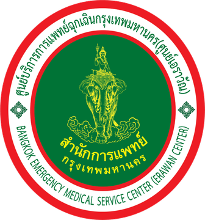

รายงาน Executive Summary การนำส่งผู้ป่วยโดยระบบบริการการแพทย์ฉุกเฉิน ศูนย์เอราวัณ 1669ประจำปีงบประมาณ 2569 (ตุลาคม 2568 - กันยายน 2569)
—
—
—
ภาพรวมสำหรับผู้บริหาร
สัดส่วนตามระดับหน่วยที่จัด · กดชิ้นหรือรายการเพื่อดูเฉพาะกลุ่มนั้น · 1 เลขปฏิบัติการ = 1 เคส
เทียบระดับหน่วยและเทียบพื้นที่ benchmark
เทียบ Basic · Advance · ML · อื่นๆ · ไม่ระบุ
เปรียบเทียบ
แผนที่การออกเหตุ ระดับเขต · พื้นที่เกิดเหตุจากคอลัมน์ อำเภอ และ ตำบล
หน่วยปฏิบัติการนี้ออกเหตุไปที่ไหน
ความหนาแน่นของการแจ้งเหตุ ตามรหัสสี
ขอบเขต 50 เขต: OpenGISData-Thailand (CC BY 4.0) · กดที่เขตบนแผนที่เพื่อดูรายแขวง · สีเข้ม = เคสมาก
ผู้ป่วยและการนำส่ง อายุ เพศ CPR ผลการดูแลเบื้องต้น โรงพยาบาลปลายทาง
กลุ่มอายุผู้ป่วย
เด็ก 0–14 ปี · ผู้ใหญ่ 15–59 ปี · ผู้สูงอายุ 60 ปีขึ้นไป · อายุ 0 หรือว่าง = ไม่ระบุ
เพศผู้ป่วย
1 รูปคน = 5% ของเคส · ค่า 0 หรือว่างในไฟล์ นับเป็น “ไม่ระบุ”
CPR และการเสียชีวิต ณ จุดเกิดเหตุ
ผลลัพธ์หลังทำ CPR แยกตามวิธี
เสียชีวิต ณ จุดเกิดเหตุ ทั้งหมด
โรงพยาบาลปลายทาง (นำส่งห้องฉุกเฉิน)
ลักษณะของเหตุ ชุดรหัสอาการ แขวง และเวลา
ชุดรหัสอาการ (รหัส-สี-ระดับ)
ชุดรหัสอาการ เทียบตามระดับหน่วย
แขวงที่เกิดเหตุ
10 แขวงแรก
ช่วงเวลาของวัน (ชั่วโมงที่รับแจ้ง)
วันในสัปดาห์
ใครออกปฏิบัติการ หน่วย กลุ่มหน่วย และเดือน
หน่วยที่ออกมากที่สุด
12 หน่วยแรก · เอราวัณแยกเป็นรายจุดจอด
กลุ่มหน่วยที่ออก
จัดกลุ่มตามชื่อหน่วย: ศูนย์เอราวัณ · โรงพยาบาล · มูลนิธิ/กู้ชีพ
ผลปฏิบัติงานที่บันทึก
ค่า 0 หรือว่างในไฟล์ นับเป็น “ไม่มีบันทึกผล”
จำนวนเคสรายเดือน
รายชื่อหน่วยที่ออกปฏิบัติการทั้งหมด
ที่มาข้อมูลและการคัดเคส
อ้างอิงไฟล์ Data การออกเหตุ ศูนย์เอราวัณ ปีงบประมาณ 2569 (ฉบับเพิ่มอายุ เพศ CPR) แบ่งโซนตามเขตที่เกิดเหตุ (คอลัมน์ อำเภอ) ตามตาราง 50 เขต → 11 โซน ส่วนเขตจตุจักร บางกอกใหญ่ บางซื่อ บางบอน และวังทองหลาง แบ่งตามแขวง (คอลัมน์ ตำบล)
นิยามรหัสอาการ 1–26
อ้างอิงชุดรหัสอาการ = รหัส (คอลัมน์ L) + สี (M) + ระดับ (N) เช่น 25เหลือง1 = รหัส 25 อุบัติเหตุยานยนต์ สีเหลือง ระดับ 1
นิยามตัวชี้วัด
อ้างอิง- Basic / Advance
- คอลัมน์ จัดหน่วยบริการระดับ = BLS / ALS
- ML
- คอลัมน์ จัดหน่วยบริการระดับ = ML แยกเป็นกลุ่มของตัวเอง
- อื่นๆ
- CLS, FR และ ERB รวมกัน แสดงรายตัวในตารางหน่วย
- ไม่ระบุ
- เคสที่คอลัมน์ระดับหน่วยว่าง
- ชุดรหัสอาการ
- รวมคอลัมน์ L รหัส + M สี + N ระดับ เป็นชุดเดียว เช่น 25แดง2 = รหัส 25 (อุบัติเหตุยานยนต์) สีแดง ระดับ 2 ถ้าขาดตัวใดตัวหนึ่งนับเป็น “ไม่ระบุ” ชื่ออาการดูในกล่อง “นิยามรหัสอาการ 1–26”
- กลุ่มอายุ (คอลัมน์ Q)
- เด็ก 0–14 ปี · ผู้ใหญ่ 15–59 ปี · ผู้สูงอายุ 60 ปีขึ้นไป · อายุ 0 หรือว่าง = ไม่ระบุ
- เพศ (คอลัมน์ R)
- ชาย / หญิง ตามที่บันทึก ค่า 0 หรือว่าง = ไม่ระบุ
- การทำ CPR (คอลัมน์ S)
- Yes = CPR · Yes,AED/DF = CPR + AED/DF · AED/DF = AED/DF อย่างเดียว · No = ไม่ได้ทำ
- CPR × ผลลัพธ์ (คอลัมน์ S × T)
- รอดชีวิต = ผลการดูแลเบื้องต้นไม่ได้ลงว่าเสียชีวิต (รวมช่องว่าง) · เสียชีวิตขณะนำส่งแยกแสดง · “ไม่ได้ทำ CPR” = ช่อง CPR เป็น No
- เสียชีวิต ณ จุดเกิดเหตุ (คอลัมน์ T)
- เคสที่ผลการดูแลรักษาเบื้องต้นบันทึกว่า “เสียชีวิต ณ จุดเกิดเหตุ” ร้อยละคิดจากเคสทั้งหมดในพื้นที่ที่เลือก (ไม่รวม “เสียชีวิตขณะนำส่ง”)
- โรงพยาบาลปลายทาง (คอลัมน์ U)
- ชื่อห้องฉุกเฉินที่นำส่ง ค่า 0 หรือว่าง = ไม่ได้นำส่ง / ไม่มีบันทึก
- เขต
- เขตที่เกิดเหตุ ไม่ใช่เขตที่ตั้งของหน่วย
ข้อควรระวังของข้อมูล
อ้างอิงอายุและเพศมีค่า 0 หรือว่างจำนวนหนึ่ง ซึ่งนับเป็น “ไม่ระบุ” สัดส่วนกลุ่มอายุและเพศจึงคิดจากเคสทั้งหมด รวมกลุ่มไม่ระบุ
“ไม่ได้นำส่ง / ไม่มีบันทึก” รวมทั้งเคสที่ไม่ได้นำส่งจริงและเคสที่ไม่ได้กรอกชื่อโรงพยาบาล แยกจากกันไม่ได้ในไฟล์นี้
เขตจตุจักร บางกอกใหญ่ บางซื่อ บางบอน วังทองหลาง อยู่สองโซน แต่ละโซนนับเฉพาะแขวงของตัวเอง
กลุ่มหน่วย (เอราวัณ / โรงพยาบาล / มูลนิธิและกู้ชีพ) จัดจากชื่อหน่วย ไม่มีคอลัมน์นี้ในไฟล์
ชื่ออาการของรหัส 1–26 มาจากรายการรหัสที่ศูนย์เอราวัณให้มา ไฟล์ไม่มีชื่อหรือเลขประจำตัวผู้ป่วย